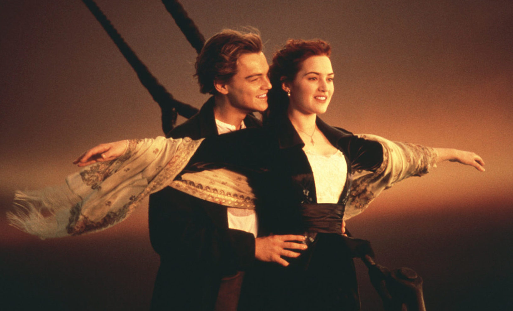
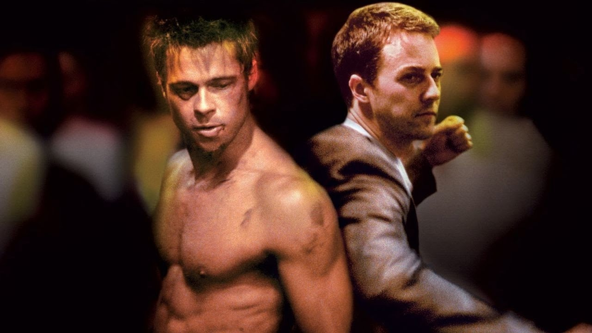

1. Титаник
В первом и последнем плавании шикарного «Титаника» встречаются двое. Пассажир нижней палубы Джек выиграл билет в карты, а богатая наследница Роза отправляется в Америку, чтобы выйти замуж по расчёту. Чувства молодых людей только успевают расцвести, и даже не классовые различия создадут испытания влюблённым, а айсберг, вставший на пути считавшегося непотопляемым лайнера.
2. Бойцовский клуб
 Сотрудник страховой компании страдает хронической бессонницей и отчаянно пытается вырваться из мучительно скучной жизни. Однажды в очередной командировке он встречает некоего Тайлера Дёрдена — харизматического торговца мылом с извращенной философией. Тайлер уверен, что самосовершенствование — удел слабых, а единственное, ради чего стоит жить — саморазрушение. Проходит немного времени, и вот уже новые друзья лупят друг друга почем зря на стоянке перед баром, и очищающий мордобой доставляет им высшее блаженство. Приобщая других мужчин к простым радостям физической жестокости, они основывают тайный Бойцовский клуб, который начинает пользоваться невероятной популярностью.3. До встречи с тобой